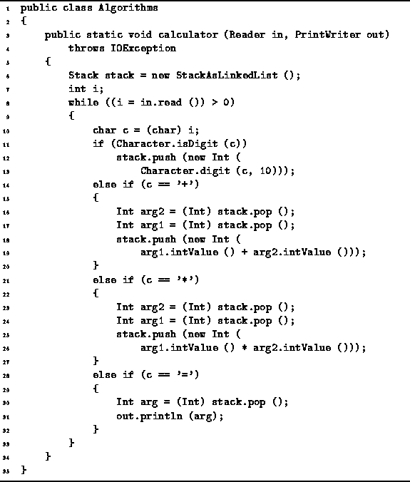

Data Structures and Algorithms
with Object-Oriented Design Patterns in Java
Data Structures and Algorithms
with Object-Oriented Design Patterns in Java
Program  gives the implementation of a simple RPN calculator.
The purpose of this example
is to illustrate the use of the Stack class.
The program shown accepts very simplified RPN expressions:
The expression may contain only single-digit integers,
the addition operator, +,
and the multiplication operator, *.
In addition, the operator = pops the top value off the stack
and prints it on the standard output stream.
Furthermore, the calculator does its computation entirely with integers.
gives the implementation of a simple RPN calculator.
The purpose of this example
is to illustrate the use of the Stack class.
The program shown accepts very simplified RPN expressions:
The expression may contain only single-digit integers,
the addition operator, +,
and the multiplication operator, *.
In addition, the operator = pops the top value off the stack
and prints it on the standard output stream.
Furthermore, the calculator does its computation entirely with integers.

Program: Stack application--a single-digit, RPN calculator.
Notice that the stack variable of the calculator method may be any object that implements the Stack interface. Consequently, the calculator does not depend on the stack implementation used! For example, if we wish to use a stack implemented using an array, we can simply replace line 3 with the following:
Stack stack = new StackAsArray (10);
The running time of the run method depends upon the number of symbols, operators, and operands, in the expression being evaluated. If there are n symbols, the body of the for loop is executed n times. It should be fairly obvious that the amount of work done per symbol is constant, regardless of the type of symbol encountered. This is the case for both the StackAsArray and the StackAsLinkedList stack implementations. Therefore, the total running time needed to evaluate an expression comprised of n symbols is O(n).
 Copyright © 1998 by Bruno R. Preiss, P.Eng. All rights reserved.
Copyright © 1998 by Bruno R. Preiss, P.Eng. All rights reserved.